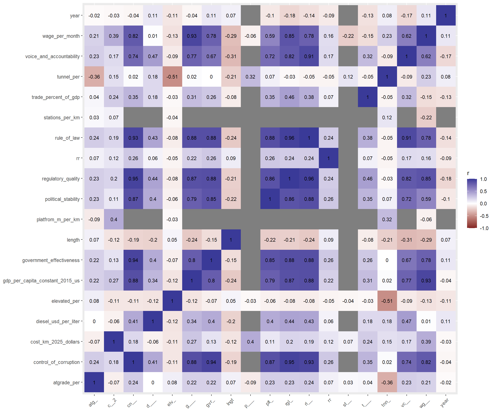
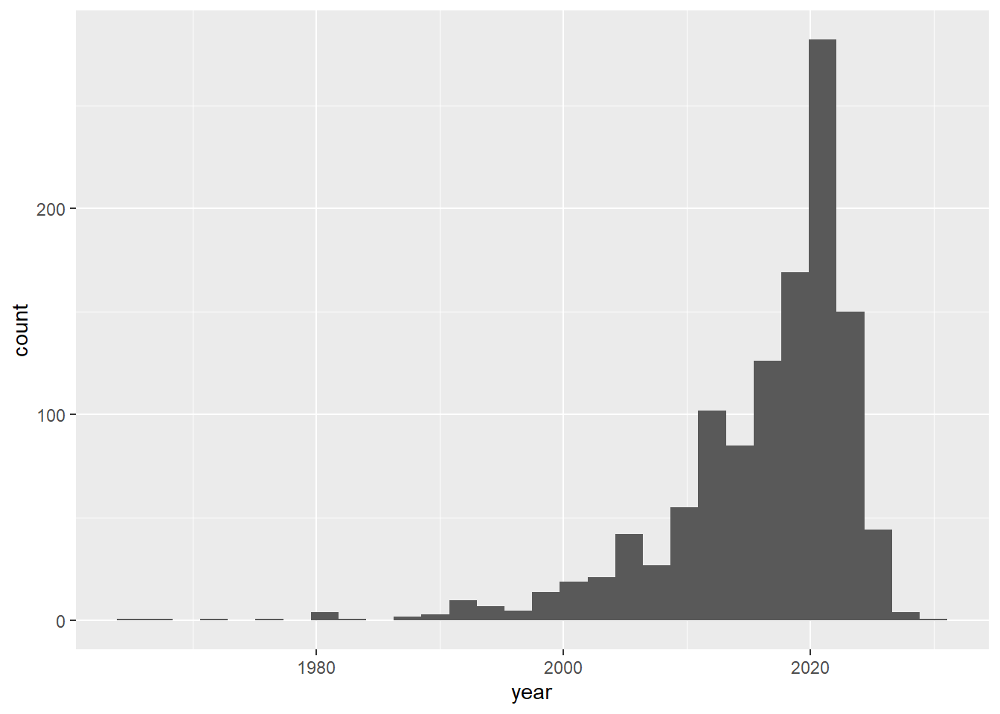
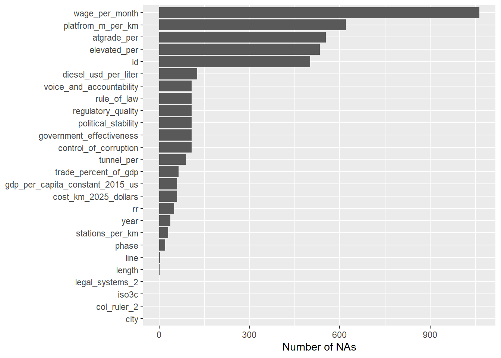
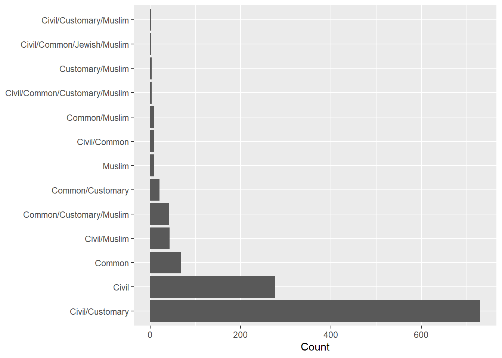
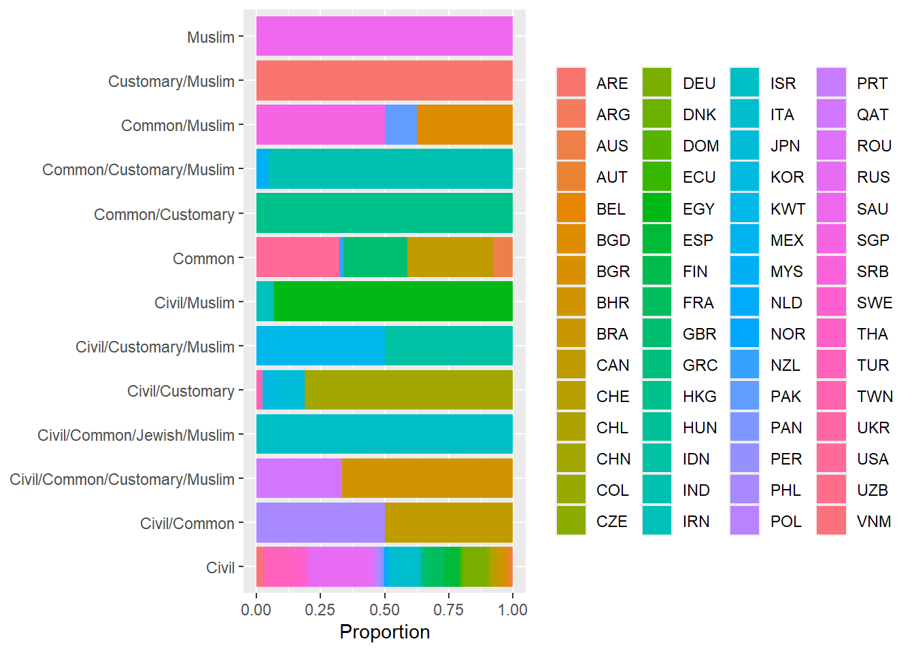
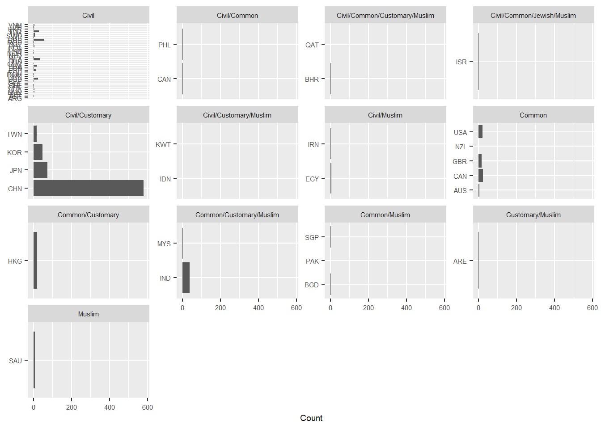
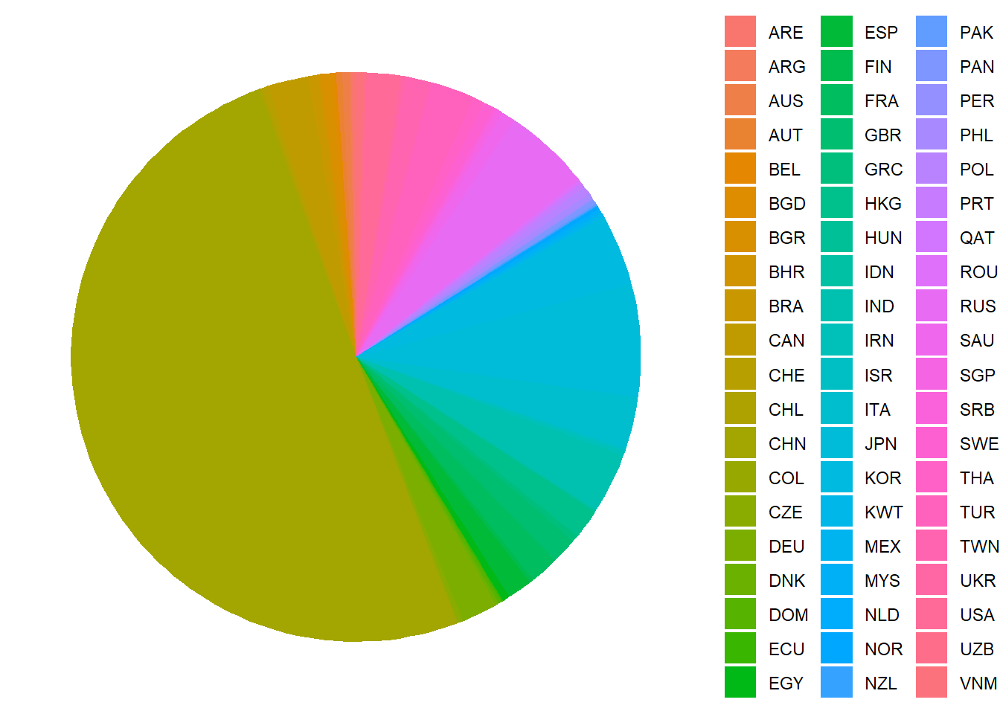

# vector of needed packages
pkgs <- c("tidyverse", "janitor", "countrycode", "readxl")
# install packages that are on needed list but not on list of installed
install.packages(setdiff(pkgs, rownames(installed.packages())))
library(tidyverse)
library(janitor) # to clean column names via clean_names()
library(countrycode) # to unify country codes to one format
library(readxl) # to import one sheet of multi-sheet excel fileCapstone Data Exploration
To do:
Make sure its same type of measurement as a2016 data (ex real/nominal, ppp, etc)
Join
get steel data
clean
join
get concrete/cement data
clean
join
do correlations with dummys(?)
Setup
## Source: NYU Marron Institute of Urban Management. (2025b, January 27). "Data".
## Transit Costs Project. https://transitcosts.com/data/
transit_data <- read.csv("data/transit_costs_project_data.csv") %>%
clean_names() %>% # standardizes column name format (lowercase, _ as seperator)
mutate(across(where(is.character), \(x) na_if(x, ""))) # "" values -> NA
## Source: University of Ottawa. (2008). Alphabetical Index of the Political
## Entities and Corresponding Legal Systems . Juriglobe.
## https://www.juriglobe.ca/eng/sys-juri/index-alpha.php
legal_origins_data <- read.csv("data/legal_origins_data.csv") %>%
clean_names() %>%
mutate(across(where(is.character), \(x) na_if(x, "")))
## Source: Hensel, P. R. (2018, November 13). ICOW Colonial History Data.
## https://paulhensel.org/icowcol.html
colonize_data <- read.csv("data/col_data.csv") %>%
clean_names() %>%
mutate(across(where(is.character), \(x) na_if(x, "")))
## Source: World Bank Group. (2026, October 8). World development indicators.
## DataBank.
## https://databank.worldbank.org/source/world-development-indicators
wb_data <- read.csv("data/wb_gdppp_gov_data.csv") %>%
clean_names() %>%
mutate(across(where(is.character), \(x) na_if(x, "")))
## Source: International Labour Orginization. (n.d.). Labour statistics for ILO
## sectors. ILOSTAT. ilostat.ilo.org/databases/ilo-sectors/
wage_data <- read.csv("data/const_wage_data.csv") %>%
clean_names() %>%
mutate(across(where(is.character), \(x) na_if(x, "")))
## Source: World Bank Group. (2025, April 24). Global fuel prices database - world
## bank data catalog. Data Catalog.
## https://datacatalog.worldbank.org/search/dataset/0066829/global-fuel-prices-database
diesel_a2016_data <- read_excel("data/Global_Fuel_Prices_Database.xlsx",
sheet = "Diesel USD") %>%
rename_with(\(nm) as.character(excel_numeric_to_date(as.numeric(nm))),
.cols = matches("^\\d+$")) %>%
clean_names() %>%
mutate(across(where(is.character), \(x) na_if(x, "")))
## Source: World Bank Group. (n.d.). WDI Database Archives. DataBank.
## https://databank.worldbank.org/source/wdi-database-archives#
diesel_b2016_data <- read.csv("data/wb_diesel_b2016_data.csv") %>%
clean_names() %>%
mutate(across(where(is.character), \(x) na_if(x, "")))Data Cleaning
Merger preparation
# From countrycode: detects country code type
### guess_field(transit_data$country) # iso2c: 97% match
# Add variable that contains the country's iso3c code
transit_data_1 <- transit_data %>%
mutate(iso3c = countrycode(country, "iso2c", "iso3c",
custom_match = c("UK" = "GBR", "DR" = "DOM"))) %>%
relocate(iso3c, .after = country)# default min = 80%
# guess_field(toupper(legal_origins_data$political_entities), min_similarity = 0)
# no match, use "country.name"
# Claude (Opus 5.5) code
legal_origins_data_1 <- legal_origins_data %>%
mutate(
name_clean = gsub("\\s*\\(minus[^)]*\\)", "", political_entities),
name_clean = gsub("\\s+", " ", name_clean),
iso3c = countrycode(name_clean, "country.name", "iso3c",
custom_match = c("GUAM (USA)" = "GUM",
"MARIANA (USA)" = "MNP",
"SAMOA, AMERICAN (USA)" = "ASM",
"VIRGIN ISLANDS (USA)" = "VIR",
"PORTO RICO (ASS. USA)" = "PRI",
"MICRONESIA" = "FSM",
"HAWAII (USA)" = NA,
"LOUISIANA (USA)" = NA,
"NORTHERN IRELAND (UK)" = NA))) %>%
relocate(iso3c, .after = political_entities)# From countrycode: detects country code type
# guess_field(colonize_data$state) # cown: 99% match
# Austro-hungarian Empire is the sole colonizer w/out an iso3c code
# 3 tansit projects are in czechia, colonized by the austro-hungarian empire
# Using Austria iso3c code: shares a boarder with Czechia (Hungary does not)
# Add variable that contains the country's iso3c code
# Add variable that contains the colonizor's iso3c code
# Add variable that contains the ind_from's iso3c code
colonize_data_1 <- colonize_data %>%
mutate(iso3c = countrycode(state, "cown", "iso3c")) %>%
relocate(iso3c, .after = state) %>%
mutate(col_ruler_iso3c = countrycode(col_ruler, "cown", "iso3c",
custom_match = c("300" = "AUT"))) %>%
relocate(col_ruler_iso3c, .after = col_ruler) %>%
mutate(ind_from_iso3c = countrycode(ind_from, "cown", "iso3c")) %>%
relocate(ind_from_iso3c, .after = ind_from)# Rename year headers to just 4 digit year
wb_data_1 <- wb_data %>%
rename_with(\(x) substr(x, 2, 5), .cols = starts_with("x"))
wb_data_1 <- wb_data_1 %>%
filter(!is.na(country_code)) %>%
filter(!is.na(series_name))
# Lengthen df by year
wb_data_1 <- wb_data_1 %>%
pivot_longer(cols = '1960':'2025',
names_to = "year",
values_to = "value")
# Remove all character in series_name values from '-' on
wb_data_1 <- wb_data_1 %>%
mutate(series_name = trimws(gsub("-.*", "", series_name)))
# Remove series_code column (to widen more easily)
wb_data_1 <- wb_data_1 %>%
select(-'series_code')
# Widen df by series
wb_data_1 <- wb_data_1 %>%
pivot_wider(names_from = 'series_name', values_from = 'value')
# apply clean names to new headers from pivot_wider (series_code values)
wb_data_1 <- wb_data_1 %>%
clean_names()
# guess_field(wb_data_1$country_code)
# wb code nearly but not fully identical to iso3c
# Add variable that contains the country's iso3c code
wb_data_1 <- wb_data_1 %>%
mutate(iso3c = countrycode(country_code, "wb", "iso3c",
custom_match = c(XKX = "XKX", CHI = NA))) %>%
relocate(iso3c, .after = country_code)
# Change 'year' class, chr -> int (to match transit data in left_join)
wb_data_1 <- wb_data_1 %>%
mutate(year = as.integer(year))# filter to relevent observations
wage_data_1 <- wage_data %>%
filter(sex_label == "Total") %>%
filter(classif1_label == "ILO sector: Construction") %>%
filter(classif2_label == "Currency: 2021 PPP $")
# check # of unique nation-year combonations
# wage_data_1 %>%
# distinct(ref_area_label, time) %>%
# count()
# Equal to obs count in wage_data_1: there is now only 1 obs per
# nation-year combanation
# Check # lost countries after filtering
# unique(wage_data$ref_area_label) %>%
# length()
#
# unique(wage_data_1$ref_area_label) %>%
# length()
# -7
# guess_field(wage_data_1$ref_area_label)
# 92.3% match for un.name.en
wage_data_1 <- wage_data_1 %>%
mutate(iso3c = countrycode(ref_area_label, "country.name", "iso3c")) %>%
relocate(iso3c, .after = ref_area_label) %>%
rename(year = time) %>%
rename(wage_per_month = obs_value)# There are multiple observations per country, default_map_1_show seems to indicate
# the main observation
# filter to only default_map_1_show == 1
diesel_a2016_data_1 <- diesel_a2016_data %>%
filter(default_map_1_to_show == 1)
# create average value for years
start <- 2016
n_times <- 10
for (yr in start:(start + n_times - 1)) {
diesel_a2016_data_1 <- diesel_a2016_data_1 %>%
mutate("{yr}" := rowMeans(pick(contains(as.character(yr))), na.rm = TRUE))
}
# delete monthly values
diesel_a2016_data_1 <- diesel_a2016_data_1 %>%
select(-c("x2015_12_01":"x2025_04_01"))
# Lengthen df by year
diesel_a2016_data_1 <- diesel_a2016_data_1 %>%
pivot_longer(cols = '2016':'2025',
names_to = "year",
values_to = "diesel_usd_per_liter_a")
# guess_field(diesel_a2016_data_1$country_code)
# diesel_a2016_data_1 <- diesel_a2016_data_1 %>%
# mutate(iso3c = countrycode(country_code, "wb", "iso3c"))
# Only Curacao is not iso3c already
# correct curacao code and rename country_code to iso3c
diesel_a2016_data_1 <- diesel_a2016_data_1 %>%
mutate(country_code = if_else(country_code == "ANT", "CUW", country_code)) %>%
rename(iso3c = country_code)
# make year an int variable
diesel_a2016_data_1 <- diesel_a2016_data_1 %>%
mutate(year = as.integer(year))
# fix french guiana, martinique, and moldova iso3c codes
diesel_a2016_data_1 <- diesel_a2016_data_1 %>%
mutate(iso3c = if_else(diesel_lcu_liter == "French Guiana", "GUF", iso3c)) %>%
mutate(iso3c = case_when(country == "Martinique" ~ "MTQ",
country == "Moldova" ~ "MDA",
.default = iso3c))# regex by claude
# renames messy year headers to just the four digit year
diesel_b2016_data_1 <- diesel_b2016_data %>%
rename_with(\(nm) sub("^x(\\d{4})_yr\\d{4}$", "\\1", nm),
.cols = matches("^x\\d{4}_yr\\d{4}$"))
# pivot_longer by year, fills in missing year values by averaging nearest 1 or 2 value(s) of the country [there is usually a 1 year gap between observations]. Value is made NA if there aren't any values within 2 years
diesel_b2016_data_1 <- diesel_b2016_data_1 %>%
pivot_longer(`1960`:`2015`, names_to = "year", values_to = "diesel_usd_per_liter_b") %>%
mutate(diesel_usd_per_liter_b = as.numeric(diesel_usd_per_liter_b),
year = as.numeric(year)) %>%
mutate(prev = diesel_usd_per_liter_b, nxt = diesel_usd_per_liter_b,
prev_yr = if_else(is.na(diesel_usd_per_liter_b), NA, year), nxt_yr = prev_yr) %>%
group_by(country_name) %>%
fill(prev, prev_yr, .direction = "down") %>%
fill(nxt, nxt_yr, .direction = "up") %>%
ungroup() %>%
mutate(prev = if_else(year - prev_yr <= 2, prev, NA),
nxt = if_else(nxt_yr - year <= 2, nxt, NA),
diesel_usd_per_liter_b = coalesce(diesel_usd_per_liter_b, (prev + nxt) / 2, prev, nxt)) %>%
select(-prev, -nxt, -prev_yr, -nxt_yr)Warning: There was 1 warning in `mutate()`.
ℹ In argument: `diesel_usd_per_liter_b = as.numeric(diesel_usd_per_liter_b)`.
Caused by warning:
! NAs introduced by coercion# guess_field(diesel_b2016_data_1$country_code, min_similarity = 50)
# ~75% match for iso3c, genc3cm, wb, wb_api3c
# The issue is the data set includes regions
# List by claude
non_countries <- c("income", "IDA", "IBRD", "&", "dividend", "small states", "Small states",
"Euro area", "European", "World", "OECD", "Indebted", "Fragile",
"Least developed", "Arab League", "Baltics", "EASTERN EUROPE",
"Sub-Saharan", "SUB-SAHARAN", "South Asia", "North America",
"Africa Eastern", "Africa Western", "China and India",
"Channel Islands", "Data from", "Last Updated")
diesel_b2016_data_1 <- diesel_b2016_data_1 %>%
filter(!str_detect(country_name, paste(non_countries, collapse = "|")))
# guess_field(diesel_b2016_data_1$country_code, min_similarity = 50)
# now ~94% match for iso3c, genc3c, etc
# all remaining non-matches are duplicates containing no information
diesel_b2016_data_1 <- diesel_b2016_data_1 %>%
filter(!country_code %in% c("ADO", "ZAR", "IMY", "WBG", "ROM", "TMP", "KSV")) %>%
rename(iso3c = country_code)Join
# SELECT relevent variables from transit_data_1
joined <- transit_data_1 %>%
select(id, iso3c, city, line, phase, rr, length, tunnel, elevated, atgrade,
stations, platform_length_meters, year, cost_km_2025_dollars)
# ADD relevent variables from legal_origins_data_1
joined <- joined %>%
left_join(legal_origins_data_1 %>% select( iso3c, legal_systems, mixed_systems_components),
by = "iso3c")
# ADD relevent variables from colonize_data_1
joined <- joined %>%
left_join(colonize_data_1 %>% select(iso3c, col_ruler_iso3c),
by = "iso3c")
# ADD relevent variables from wb_data_1
joined <- joined %>%
left_join(wb_data_1 %>% select(-c(country_name, country_code)),
by = c("iso3c", "year"))
# ADD relevent variables from wage_data_1
joined <- joined %>%
left_join(wage_data_1 %>% select(iso3c, year, wage_per_month),
by = c("iso3c", "year"))
# ADD relevent variables from diesel_a2016_data_1
joined <- joined %>%
left_join(diesel_a2016_data_1 %>% select(iso3c, year, diesel_usd_per_liter_a),
by = c("iso3c", "year"))
# ADD relevent variables from diesel_a2016_data_1
joined <- joined %>%
left_join(diesel_b2016_data_1 %>% select(iso3c, year, diesel_usd_per_liter_b),
by = c("iso3c", "year"))Joined Clean
# Make all non-entries into NA using an anonymous function [\(x)]
joined_1 <- joined %>%
mutate(across(everything(), \(col) if_else(col %in% c(
"See Notes.", "See notes.", "#N/A", "N/A", "n/a", ".."), NA, col)))
# Clean length:stations and convert to numeric
joined_1 <- joined_1 %>%
# Remove footnote asterisks
mutate(across(length:stations, \(col) gsub("\\*", "", col))) %>%
# Make "x/y" entries NA, get rid of abiguous '36/22' station count
mutate(across(length:stations, \(col) if_else(grepl("/", col), NA, col))) %>%
# Convert to numeric
mutate(across(length:stations, as.numeric))
# Clean platform_length_meters and convert to numeric
joined_1 <- joined_1 %>%
# Claude code: if m is present, replace value with all digits and '.'s proceeding
# m until a non digit/. is found. (ex: '4 cars/120m' -> '120')
mutate(platform_length_meters = if_else(
grepl("m", platform_length_meters),
sub("^(.*[^0-9.])?([0-9.]+)m.*$", "\\2", platform_length_meters),
platform_length_meters)) %>%
# Make any values containing 'c' (cars), '/' or '-' into NA
mutate(platform_length_meters = if_else(
grepl("[c/-]", platform_length_meters), NA, platform_length_meters)) %>%
# Convert to numeric
mutate(platform_length_meters = as.numeric(platform_length_meters))
# Clean cost_km_2025_dollars and convert to numeric
joined_1 <- joined_1 %>%
mutate(cost_km_2025_dollars = gsub(",", "", cost_km_2025_dollars)) %>%
mutate(cost_km_2025_dollars = as.numeric(cost_km_2025_dollars))
# Clean government_effectiveness:trade_percent_of_gdp and convert to numeric
joined_1 <- joined_1 %>%
# Convert to numeric
mutate(across(government_effectiveness:trade_percent_of_gdp, as.numeric))
# Correct legal systems for cit(y/ies) that differ from their greater nation
joined_1 <- joined_1 %>%
mutate(legal_systems = if_else(
city %in% "Montreal", "Mixed", legal_systems)) %>%
mutate(mixed_systems_components = if_else(
city %in% "Montreal", "Civil/Common", mixed_systems_components))
# Unify legal system values format
joined_1 <- joined_1 %>%
mutate(mixed_systems_components = gsub(" ", "", mixed_systems_components)) %>%
mutate(mixed_systems_components = gsub("law", "", mixed_systems_components)) %>%
mutate(legal_systems = gsub(" ", "", legal_systems)) %>%
mutate(legal_systems = gsub("law", "", legal_systems)) %>%
mutate(mixed_systems_components = if_else(
is.na(mixed_systems_components), NA,
sapply(strsplit(mixed_systems_components, "/"), \(parts) paste(sort(parts), collapse = "/"))))
joined_1 <- joined_1 %>%
mutate(diesel_usd_per_liter = coalesce(
diesel_usd_per_liter_a, diesel_usd_per_liter_b))Transform Variables
# Make variables
joined_2 <- joined_1 %>%
# Make variables for length of rail type/length of rail
mutate(tunnel_per = tunnel/length) %>%
mutate(elevated_per = elevated/length) %>%
mutate(atgrade_per = atgrade/length) %>%
# Make variables for stations/km and platform m/km
mutate(stations_per_km = stations/length) %>%
mutate(platfrom_m_per_km = stations_per_km*platform_length_meters) %>%
# Make col_ruler_2 where uncolonized countries are marked as their own col origin
mutate(col_ruler_2 = if_else(is.na(col_ruler_iso3c), iso3c, col_ruler_iso3c)) %>%
# Make legal_systems_2, where 'Mixed' _> value of mixed_systems_components
mutate(legal_systems_2 = if_else(
legal_systems == "Mixed", mixed_systems_components, legal_systems))
# Remove irrelevent variables
joined_2_trim <- joined_2 %>%
select(-c(tunnel, elevated, atgrade, stations, platform_length_meters,
legal_systems, mixed_systems_components, col_ruler_iso3c,
diesel_usd_per_liter_a, diesel_usd_per_liter_b))Data Exploration
round(cor_matrix, 2)
# create correlation matrix
cor_matrix <- joined_2_trim %>%
select(-id) %>%
select(where(is.numeric)) %>%
cor(use = "pairwise.complete.obs")
cor_round <- round(cor_matrix, 2)
colnames(cor_round) <- abbreviate(colnames(cor_round), 4)
cor_round rr lngt year c__2 gvr_ cn__ plt_ rgl_
rr 1.00 0.09 -0.09 0.12 0.26 0.26 0.26 0.24
length 0.09 1.00 0.07 -0.12 -0.15 -0.19 -0.22 -0.21
year -0.09 0.07 1.00 -0.03 0.11 -0.04 -0.10 -0.18
cost_km_2025_dollars 0.12 -0.12 -0.03 1.00 0.13 0.18 0.11 0.20
government_effectiveness 0.26 -0.15 0.11 0.13 1.00 0.94 0.85 0.88
control_of_corruption 0.26 -0.19 -0.04 0.18 0.94 1.00 0.87 0.95
political_stability 0.26 -0.22 -0.10 0.11 0.85 0.87 1.00 0.86
regulatory_quality 0.24 -0.21 -0.18 0.20 0.88 0.95 0.86 1.00
rule_of_law 0.24 -0.24 -0.14 0.19 0.88 0.93 0.88 0.96
voice_and_accountability 0.17 -0.31 -0.17 0.17 0.67 0.74 0.72 0.82
gdp_per_capita_constant_2015_us 0.22 -0.24 -0.04 0.27 0.80 0.88 0.79 0.87
trade_percent_of_gdp 0.07 -0.08 -0.13 0.24 0.26 0.35 0.35 0.46
wage_per_month 0.16 -0.29 0.11 0.39 0.78 0.82 0.59 0.85
diesel_usd_per_liter 0.06 -0.20 0.11 -0.06 0.40 0.41 0.40 0.44
tunnel_per -0.05 -0.21 0.08 0.15 0.00 0.02 0.07 -0.03
elevated_per -0.05 0.05 -0.11 -0.11 -0.07 -0.11 -0.06 -0.08
atgrade_per 0.07 0.07 -0.02 -0.07 0.22 0.24 0.23 0.23
stations_per_km NaN NaN NaN 0.07 NaN NaN NaN NaN
platfrom_m_per_km NaN NaN NaN 0.40 NaN NaN NaN NaN
rl__ vc__ g___ t___ wg__ d___ tnn_ elv_
rr 0.24 0.17 0.22 0.07 0.16 0.06 -0.05 -0.05
length -0.24 -0.31 -0.24 -0.08 -0.29 -0.20 -0.21 0.05
year -0.14 -0.17 -0.04 -0.13 0.11 0.11 0.08 -0.11
cost_km_2025_dollars 0.19 0.17 0.27 0.24 0.39 -0.06 0.15 -0.11
government_effectiveness 0.88 0.67 0.80 0.26 0.78 0.40 0.00 -0.07
control_of_corruption 0.93 0.74 0.88 0.35 0.82 0.41 0.02 -0.11
political_stability 0.88 0.72 0.79 0.35 0.59 0.40 0.07 -0.06
regulatory_quality 0.96 0.82 0.87 0.46 0.85 0.44 -0.03 -0.08
rule_of_law 1.00 0.91 0.88 0.38 0.78 0.43 -0.05 -0.08
voice_and_accountability 0.91 1.00 0.77 0.32 0.62 0.47 -0.09 -0.09
gdp_per_capita_constant_2015_us 0.88 0.77 1.00 0.31 0.93 0.34 0.02 -0.12
trade_percent_of_gdp 0.38 0.32 0.31 1.00 -0.15 0.18 -0.05 -0.03
wage_per_month 0.78 0.62 0.93 -0.15 1.00 0.01 0.23 -0.13
diesel_usd_per_liter 0.43 0.47 0.34 0.18 0.01 1.00 0.18 -0.12
tunnel_per -0.05 -0.09 0.02 -0.05 0.23 0.18 1.00 -0.51
elevated_per -0.08 -0.09 -0.12 -0.03 -0.13 -0.12 -0.51 1.00
atgrade_per 0.24 0.23 0.22 0.04 0.21 0.00 -0.36 0.08
stations_per_km NaN NaN NaN NaN -0.22 NaN 0.12 -0.04
platfrom_m_per_km NaN NaN NaN NaN -0.06 NaN 0.32 -0.03
atg_ st__ p___
rr 0.07 NaN NaN
length 0.07 NaN NaN
year -0.02 NaN NaN
cost_km_2025_dollars -0.07 0.07 0.40
government_effectiveness 0.22 NaN NaN
control_of_corruption 0.24 NaN NaN
political_stability 0.23 NaN NaN
regulatory_quality 0.23 NaN NaN
rule_of_law 0.24 NaN NaN
voice_and_accountability 0.23 NaN NaN
gdp_per_capita_constant_2015_us 0.22 NaN NaN
trade_percent_of_gdp 0.04 NaN NaN
wage_per_month 0.21 -0.22 -0.06
diesel_usd_per_liter 0.00 NaN NaN
tunnel_per -0.36 0.12 0.32
elevated_per 0.08 -0.04 -0.03
atgrade_per 1.00 0.03 -0.09
stations_per_km 0.03 NaN NaN
platfrom_m_per_km -0.09 NaN NaNcor_round %>%
as.data.frame() %>%
rownames_to_column("var1") %>%
pivot_longer(-var1, names_to = "var2", values_to = "r") %>%
ggplot(aes(var2, var1, fill = r)) +
geom_tile() +
geom_text(aes(label = r), size = 3) +
scale_fill_gradient2(limits = c(-1, 1)) +
labs(x = NULL, y = NULL, fill = "r") +
theme(axis.text.x = element_text(angle = 45, hjust = 1))Warning: Removed 52 rows containing missing values or values outside the scale range
(`geom_text()`).
# create a table from the matrix and sort by absolute value of correlation
cor_matrix %>%
as.table() %>%
as.data.frame() %>%
filter(as.character(Var1) < as.character(Var2)) %>%
rename(cor = Freq) %>%
arrange(desc(abs(cor))) Var1 Var2
1 regulatory_quality rule_of_law
2 control_of_corruption regulatory_quality
3 control_of_corruption government_effectiveness
4 control_of_corruption rule_of_law
5 gdp_per_capita_constant_2015_us wage_per_month
6 rule_of_law voice_and_accountability
7 political_stability rule_of_law
8 gdp_per_capita_constant_2015_us rule_of_law
9 government_effectiveness rule_of_law
10 government_effectiveness regulatory_quality
11 control_of_corruption gdp_per_capita_constant_2015_us
12 gdp_per_capita_constant_2015_us regulatory_quality
13 control_of_corruption political_stability
14 political_stability regulatory_quality
15 government_effectiveness political_stability
16 regulatory_quality wage_per_month
17 control_of_corruption wage_per_month
18 regulatory_quality voice_and_accountability
19 gdp_per_capita_constant_2015_us government_effectiveness
20 gdp_per_capita_constant_2015_us political_stability
21 government_effectiveness wage_per_month
22 rule_of_law wage_per_month
23 gdp_per_capita_constant_2015_us voice_and_accountability
24 control_of_corruption voice_and_accountability
25 political_stability voice_and_accountability
26 government_effectiveness voice_and_accountability
27 voice_and_accountability wage_per_month
28 political_stability wage_per_month
29 elevated_per tunnel_per
30 diesel_usd_per_liter voice_and_accountability
31 regulatory_quality trade_percent_of_gdp
32 diesel_usd_per_liter regulatory_quality
33 diesel_usd_per_liter rule_of_law
34 control_of_corruption diesel_usd_per_liter
35 diesel_usd_per_liter political_stability
36 cost_km_2025_dollars platfrom_m_per_km
37 diesel_usd_per_liter government_effectiveness
38 cost_km_2025_dollars wage_per_month
39 rule_of_law trade_percent_of_gdp
40 atgrade_per tunnel_per
41 control_of_corruption trade_percent_of_gdp
42 political_stability trade_percent_of_gdp
43 diesel_usd_per_liter gdp_per_capita_constant_2015_us
44 trade_percent_of_gdp voice_and_accountability
45 platfrom_m_per_km tunnel_per
46 gdp_per_capita_constant_2015_us trade_percent_of_gdp
47 length voice_and_accountability
48 length wage_per_month
49 cost_km_2025_dollars gdp_per_capita_constant_2015_us
50 government_effectiveness trade_percent_of_gdp
51 control_of_corruption rr
52 political_stability rr
53 government_effectiveness rr
54 rr rule_of_law
55 gdp_per_capita_constant_2015_us length
56 regulatory_quality rr
57 length rule_of_law
58 atgrade_per rule_of_law
59 atgrade_per control_of_corruption
60 cost_km_2025_dollars trade_percent_of_gdp
61 atgrade_per regulatory_quality
62 tunnel_per wage_per_month
63 atgrade_per voice_and_accountability
64 atgrade_per political_stability
65 atgrade_per government_effectiveness
66 gdp_per_capita_constant_2015_us rr
67 atgrade_per gdp_per_capita_constant_2015_us
68 stations_per_km wage_per_month
69 length political_stability
70 atgrade_per wage_per_month
71 length regulatory_quality
72 length tunnel_per
73 diesel_usd_per_liter length
74 cost_km_2025_dollars regulatory_quality
75 control_of_corruption length
76 cost_km_2025_dollars rule_of_law
77 diesel_usd_per_liter trade_percent_of_gdp
78 control_of_corruption cost_km_2025_dollars
79 diesel_usd_per_liter tunnel_per
80 regulatory_quality year
81 rr voice_and_accountability
82 voice_and_accountability year
83 cost_km_2025_dollars voice_and_accountability
84 rr wage_per_month
85 government_effectiveness length
86 trade_percent_of_gdp wage_per_month
87 cost_km_2025_dollars tunnel_per
88 rule_of_law year
89 trade_percent_of_gdp year
90 cost_km_2025_dollars government_effectiveness
91 elevated_per wage_per_month
92 cost_km_2025_dollars length
93 stations_per_km tunnel_per
94 diesel_usd_per_liter elevated_per
95 elevated_per gdp_per_capita_constant_2015_us
96 cost_km_2025_dollars rr
97 elevated_per year
98 cost_km_2025_dollars political_stability
99 cost_km_2025_dollars elevated_per
100 control_of_corruption elevated_per
101 diesel_usd_per_liter year
102 wage_per_month year
103 government_effectiveness year
104 political_stability year
105 atgrade_per platfrom_m_per_km
106 rr year
107 length rr
108 tunnel_per voice_and_accountability
109 elevated_per voice_and_accountability
110 length trade_percent_of_gdp
111 tunnel_per year
112 atgrade_per elevated_per
113 elevated_per rule_of_law
114 elevated_per regulatory_quality
115 atgrade_per cost_km_2025_dollars
116 atgrade_per rr
117 political_stability tunnel_per
118 cost_km_2025_dollars stations_per_km
119 elevated_per government_effectiveness
120 atgrade_per length
121 length year
122 rr trade_percent_of_gdp
123 cost_km_2025_dollars diesel_usd_per_liter
124 platfrom_m_per_km wage_per_month
125 elevated_per political_stability
126 diesel_usd_per_liter rr
127 elevated_per length
128 rule_of_law tunnel_per
129 trade_percent_of_gdp tunnel_per
130 elevated_per rr
131 rr tunnel_per
132 atgrade_per trade_percent_of_gdp
133 control_of_corruption year
134 elevated_per stations_per_km
135 gdp_per_capita_constant_2015_us year
136 cost_km_2025_dollars year
137 elevated_per platfrom_m_per_km
138 atgrade_per stations_per_km
139 regulatory_quality tunnel_per
140 elevated_per trade_percent_of_gdp
141 atgrade_per year
142 gdp_per_capita_constant_2015_us tunnel_per
143 control_of_corruption tunnel_per
144 diesel_usd_per_liter wage_per_month
145 government_effectiveness tunnel_per
146 atgrade_per diesel_usd_per_liter
147 platfrom_m_per_km rr
148 stations_per_km year
149 platfrom_m_per_km year
150 platfrom_m_per_km political_stability
151 platfrom_m_per_km regulatory_quality
152 platfrom_m_per_km rule_of_law
153 stations_per_km voice_and_accountability
154 platfrom_m_per_km voice_and_accountability
155 stations_per_km trade_percent_of_gdp
156 platfrom_m_per_km trade_percent_of_gdp
157 rr stations_per_km
158 length stations_per_km
159 government_effectiveness stations_per_km
160 control_of_corruption stations_per_km
161 political_stability stations_per_km
162 regulatory_quality stations_per_km
163 rule_of_law stations_per_km
164 gdp_per_capita_constant_2015_us stations_per_km
165 diesel_usd_per_liter stations_per_km
166 platfrom_m_per_km stations_per_km
167 length platfrom_m_per_km
168 government_effectiveness platfrom_m_per_km
169 control_of_corruption platfrom_m_per_km
170 gdp_per_capita_constant_2015_us platfrom_m_per_km
171 diesel_usd_per_liter platfrom_m_per_km
cor
1 0.958657975
2 0.946283482
3 0.944388951
4 0.933135419
5 0.931990584
6 0.906339258
7 0.878871609
8 0.878552479
9 0.878492996
10 0.877445483
11 0.875387874
12 0.870131395
13 0.866437242
14 0.863880405
15 0.854384742
16 0.847570753
17 0.824815648
18 0.823094423
19 0.799396647
20 0.789214687
21 0.781865127
22 0.781195324
23 0.766839076
24 0.743986599
25 0.717728548
26 0.669333312
27 0.618509250
28 0.594125337
29 -0.511438948
30 0.472057033
31 0.460074142
32 0.438984216
33 0.432801267
34 0.412312170
35 0.403773378
36 0.399662590
37 0.395737933
38 0.388883846
39 0.380939605
40 -0.356727402
41 0.351546312
42 0.346353355
43 0.335213676
44 0.323727538
45 0.322323331
46 0.307577801
47 -0.307425356
48 -0.289391165
49 0.273626701
50 0.262795473
51 0.261393206
52 0.261010599
53 0.255486247
54 0.244710286
55 -0.241521368
56 0.238896008
57 -0.238165189
58 0.237125553
59 0.236775396
60 0.236147598
61 0.231572828
62 0.227135371
63 0.225471151
64 0.225293197
65 0.222770303
66 0.222509141
67 0.221191559
68 -0.219868192
69 -0.215293795
70 0.214338010
71 -0.214073363
72 -0.207838295
73 -0.197999278
74 0.196771889
75 -0.194511859
76 0.188505373
77 0.184985567
78 0.180975694
79 0.180767458
80 -0.179075356
81 0.171617241
82 -0.171170894
83 0.171019246
84 0.158542587
85 -0.153378165
86 -0.150139828
87 0.148742830
88 -0.140157346
89 -0.132925669
90 0.131237080
91 -0.130612034
92 -0.124579743
93 0.122830691
94 -0.122388674
95 -0.118909361
96 0.117457643
97 -0.113279165
98 0.112962366
99 -0.110847045
100 -0.110586204
101 0.110342792
102 0.109800171
103 0.109634099
104 -0.095779302
105 -0.092594995
106 -0.088029642
107 0.087832123
108 -0.087208053
109 -0.085299779
110 -0.082627262
111 0.082451091
112 0.081738107
113 -0.079421377
114 -0.076953559
115 -0.074575470
116 0.073421928
117 0.071373251
118 0.069908937
119 -0.069886283
120 0.068840513
121 0.068045042
122 0.065450583
123 -0.062137301
124 -0.061807593
125 -0.055989459
126 0.055091447
127 0.054177756
128 -0.053735651
129 -0.053421290
130 -0.049551075
131 -0.048322983
132 0.042442664
133 -0.038707391
134 -0.037035736
135 -0.035028421
136 -0.032438493
137 -0.030175945
138 0.029263320
139 -0.026321709
140 -0.025162082
141 -0.023918363
142 0.020712930
143 0.016858893
144 0.013349135
145 0.004730471
146 -0.004136367
147 NaN
148 NaN
149 NaN
150 NaN
151 NaN
152 NaN
153 NaN
154 NaN
155 NaN
156 NaN
157 NaN
158 NaN
159 NaN
160 NaN
161 NaN
162 NaN
163 NaN
164 NaN
165 NaN
166 NaN
167 NaN
168 NaN
169 NaN
170 NaN
171 NaNggplot(transit_data_1, aes(x = year)) +
geom_histogram()`stat_bin()` using `bins = 30`. Pick better value `binwidth`.Warning: Removed 37 rows containing non-finite outside the scale range
(`stat_bin()`).
# ggplot(wage_data_1, aes(x = year)) +
# geom_histogram()# NAs per variable
joined_2_trim %>%
is.na() %>%
colSums() %>%
enframe(name = "variable", value = "n_na") %>%
ggplot(aes(x = n_na, y = reorder(variable, n_na))) +
geom_col() +
labs(x = "Number of NAs", y = NULL)
joined_2_trim %>%
nrow()[1] 1214joined_2_trim %>%
filter(if_any(-c(platfrom_m_per_km, atgrade_per, elevated_per, id), is.na)) %>%
nrow()[1] 1080joined_2_trim %>%
filter(if_all(
-c(platfrom_m_per_km, atgrade_per, elevated_per, id), \(col) !is.na(col))) %>%
nrow()[1] 134# Distribution barchart of legal_systems_2
joined_2 %>%
ggplot(aes(y = fct_infreq(legal_systems_2))) +
geom_bar() +
labs(x = "Count", y = NULL)
# Distribution of countries, grouped by legal_systems_2
joined_2 %>%
ggplot(aes(y = legal_systems_2, fill = iso3c)) +
geom_bar(position = "fill") +
labs(x = "Proportion", y = NULL, fill = NULL) +
guides(fill = guide_legend(ncol = 4))
joined_2 %>%
ggplot(aes(y = iso3c)) +
geom_bar() +
facet_wrap(~ legal_systems_2, scales = "free_y", ncol = 4) +
labs(x = "Count", y = NULL) +
theme(text = element_text(size = 7))
joined_2 %>%
ggplot(aes(x = "", fill = iso3c)) +
geom_bar(width = 1) +
coord_polar(theta = "y") +
labs(fill = NULL) +
theme_void()
Diagnostics/bug-finding code used
diesel_b2016_data_1 %>%
count(iso3c, year) %>%
filter(n > 1)# A tibble: 0 × 3
# ℹ 3 variables: iso3c <chr>, year <dbl>, n <int>joined %>% filter(!is.na(diesel_usd_per_liter_a), !is.na(diesel_usd_per_liter_b)) [1] id iso3c
[3] city line
[5] phase rr
[7] length tunnel
[9] elevated atgrade
[11] stations platform_length_meters
[13] year cost_km_2025_dollars
[15] legal_systems mixed_systems_components
[17] col_ruler_iso3c government_effectiveness
[19] control_of_corruption political_stability
[21] regulatory_quality rule_of_law
[23] voice_and_accountability gdp_per_capita_constant_2015_us
[25] trade_percent_of_gdp wage_per_month
[27] diesel_usd_per_liter_a diesel_usd_per_liter_b
<0 rows> (or 0-length row.names)